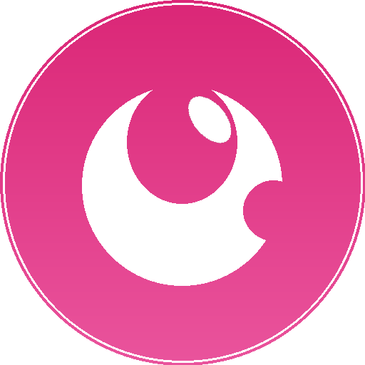

阿萍的工作台
每天进步一点点
每日计划
📲
底部看到网址栏？这是网页模式。iOS 26 添加时记得打开
"Open as Web App"
开关。先删除旧图标 → Safari 分享 → 添加到主屏幕 → 打开"Open as Web App" → 添加。
×
💡
今日时间块规划
增加时段
今日核心目标
💡
AI 动态每日简报
· 每天 09:00 自动更新
刷新
我的科技新闻笔记
上方为每日自动生成的 AI 简报，下方可手动记录你额外关注的科技资讯。
添加一条科技新闻
💡
每日新闻联播深度分析
· 每天 07:00 自动更新
刷新
💡
内容复盘
今日发布/创作内容
数据反馈
亮点与改进
💡
每日任务清单
完成后打勾，养成可持续的习惯。
0%
今日完成度
新增
还没有任务，新增一个开始吧
💡
随手备忘录
内容自动保存到云端，清除缓存也不会丢失
💡
选题灵感池
添加
💡
每日雅思模拟
· 每天 8:00 自动更新
刷新
📐 雅思内容标准（点击展开）
正在按雅思标准整理今日新闻...
充电站打卡
今日学习内容
学习时长（分钟）
新学单词 / 句型